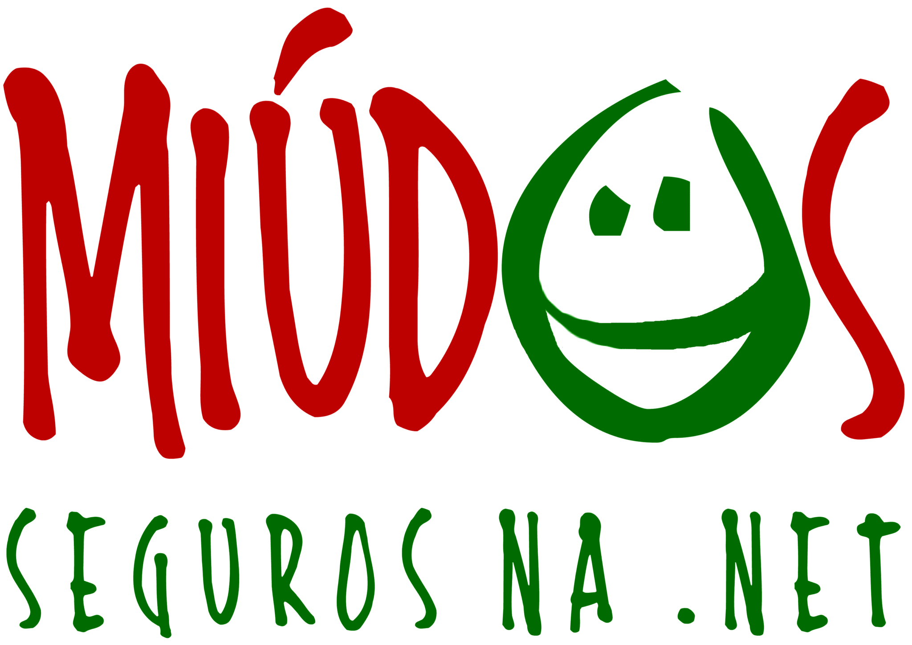

ePrivacidade Trocada Por Miúdos
“ePrivacidade Trocada Por Miúdos” é uma campanha sobre privacidade e segurança online que visa sensibilizar crianças, pré-adolescentes, adolescentes e jovens adultos para a confiança e segurança online. A iniciativa inclui quatro componentes: um evento anual para assinalar o Dia da Proteção de Dados; a disponibilização de tutoriais e outros recursos sobre privacidade e segurança online; um concurso anual destinado a estudantes; disseminação de trabalhos de estudantes sobre a privacidade e segurança online.

As Quatro Componentes da Iniciativa
1. O evento anual terá lugar a 28 de Janeiro (Dia da Proteção de Dados) e, para além de incluir uma conferência com palestrantes e painéis para discutir itens relacionados com a privacidade e proteção de dados, servirá de lançamento do concurso anual destinado a estudantes. No segundo ano, para além de passar a incluir workshops, o evento incluirá também jovens estudantes como oradores nos diversos painéis.
2. A tradução para português de tutoriais da ISOC para serem usados como suporte informativo ao concurso anual destinado a estudantes e a criação de novos tutoriais para informação, sensibilização e suporte aos concursos que se seguirem.
3. O concurso promoverá a produção de materiais multimídia de sensibilização sobre privacidade, tais como imagens para difusão em redes sociais, memes, cartazes, folhetos, PSAs de áudio e vídeo sobre confiança e privacidade online, proteção de dados pessoais, segurança de dispositivos ligados à rede, entre outros tópicos relacionados com a privacidade.
4. Cerimónia de atribuição de prémios e divulgação – dentro e fora da escola – dos trabalhos submetidos a concurso pelos alunos, através de exposições ou outros meios menos formais, tais como através das redes sociais, com foco particular em datas relevantes para a temática.
Promotores da iniciativa
“ePrivacidade – Trocada Por Miúdos” é uma iniciativa conjunta do Capítulo Português da Internet Society e do Projeto Miúdos Seguros na Net, e é maioritariamento subsidiada pela Internet Society Foundation como sponsor Platina.


À iniciativa podem ainda associar-se outras entidades como patrocinadores, parceiros disseminadores, parceiros de media, apoiantes, e ainda embaixadores.
Quem são os promotores

O Portuguese Chapter da Internet Society, legalmente designado em Portugal por Associação ISOC Portugal, é uma associação sem fins lucrativos, reconhecida pela Internet Society como sua representante em Portugal, alinhada com os princípios e forma de atuação da Internet Society, tendo como fim a promoção em Portugal do desenvolvimento de uma Internet segura e confiável, acessível a todos, aberta e de acesso não discriminatório, com respeito pelos princípios da liberdade de expressão e da privacidade, tecnicamente avançada e completamente integrada na Internet mundial.
A Internet Society (ISOC) é uma associação internacional, sem fins lucrativos, fundada pelos pioneiros da Internet, que é a organização “chapéu de chuva” do IETF – Internet Engineering Task Force, o organismo mais relevante no estabelecimento de normas abertas para o funcionamento da Internet. Para além desta faceta, a ISOC intervém a nível social, político e cívico com o propósito de manter a Internet como uma infraestrutura aberta, universal e ao serviço do conjunto da Humanidade, sem exceções de raças, credos ou países.
Lançado em 2003, o Projecto MiudosSegurosNa.Net é uma iniciativa familiar que ajuda famílias, escolas e comunidades a promover a utilização ética, responsável e segura das tecnologias de informação e comunicação por crianças e jovens. O Projecto MiudosSegurosNa.Net guia-se pela visão de uma sociedade onde as famílias, as escolas e as comunidades trabalham em conjunto para minimizar os danos a que crianças e jovens podem estar expostos online, no sentido de lhes permitir maximizar as oportunidades e os benefícios que as tecnologias de informação e comunicação têm para oferecer.
A Internet Society Foundation é uma organização sem fins lucrativos que trabalha com a Internet Society para apoiar uma visão partilhada por ambas as organizações de que a Internet é para todos. A Fundação foca-se no financiamento de iniciativas que promovam o desenvolvimento da Internet como uma infraestrutura técnica global e que demonstrem a diferença positiva que a Internet pode fazer para enriquecer a vida das pessoas em todo o mundo.
Coordenadores da Iniciativa
José Legatheaux Martins
jose.legatheaux at fct.unl.pt
Tito de Morais
tito.morais at miudossegurosna.net
Comissão de Honra
A iniciativa “ePrivacidade Trocada Por Miúdos” conta com as seguintes personalidades que aceitaram integrar a sua Comissão de Honra:
- Senhor Presidente da Assembleia da República, Doutor Eduardo Ferro Rodrigues
- Senhor Presidente do Supremo Tribunal de Justiça, Juíz Conselheiro Joaquim António Piçarra
- Senhor Ministro de Estado, da Economia e da Transição Digital, Doutor Pedro Siza Vieira
- Senhor Ministro da Ciência, Tecnologia e Ensino Superior, Professor Doutor Manuel Heitor
- Senhor Ministro da Educação, Doutor Tiago Brandão Rodrigues
- Senhora Conselheira Procuradora-Geral da República, Doutora Lucília Gago
- Senhora Provedora de Justiça, Doutora Maria Lúcia Amaral
- Senhor Presidente da Comissão Parlamentar de Direitos, Liberdades e Garantias, Deputado Doutor Luís Marques Guedes
- Senhor Presidente da Comissão Parlamentar de Educação, Ciência, Juventude e Desporto, Deputado Doutor Firmino Marques
- Senhora Presidente da Comissão Parlamentar de Cultura e Comunicação, Deputada Engenheira Ana Paula Vitorino
- Senhora Presidente da Comissão Nacional de Promoção dos Direitos e Proteção das Crianças e Jovens (CNPDPCJ), Doutora Rosário Farmhouse
- Senhora Presidente do Conselho Nacional de Educação, Doutora Maria Emília Brederode dos Santos
- Senhora Presidente Honorária do Instituto de Apoio à Criança, Doutora Manuela Eanes